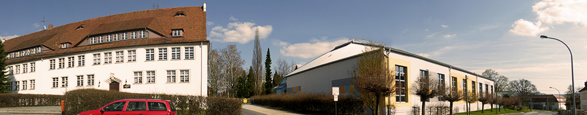
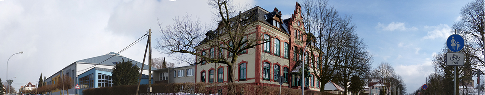

Oberland-Gymnasium Seifhennersdorf
Startseite
Unsere Schule
Das OGS im Überblick
Das Gesicht unserer Schule
Leitideen unserer Schule
Schulgeschichte
Geschichte der WOOLING-Erfolge
Traditionen
Weihnachtsmarkt
Weihnachtssingen
Volleyballturnier
Rezitatorenwettbewerb
Talentefest
Fächerverbindender Unterricht
Hilfsprojekte
Spenden
Patenkind
Demokratisches Handeln
Schulleitung
Kollegium
Beratungslehrer
Vertrauenslehrer
Klassen
Klasse 5
5a
5b
Klasse 6
6a
6b
Klasse 7
7a
7b
Klasse 8
8a
8b
Klasse 9
9a
9b
9c
Klasse 10
10a
10b
Klasse 11
11a
11b
11c
11d
Klasse 12
12a
12b
12c
12d
Schülererfolge
Sekretariat, Hausmeister
Schulregeln, Hausordnung
Hausordnung
Schulregeln
Erklärung gegen Mobbing
Pläne/Termine
Termine für das Schuljahr
Kennenlernangebote
Lageplan
Vertretungsplan
Unterrichtszeiten
Prüfungstermine
OGS Gemeinschaft
Schulkonferenz
Schülervertretung
Elternvertreter
Förderverein
Ehemalige
Schulpartnerschaften
San Marcos in Texas
Ünye in der Türkei
Liberec und Rumburk in Tschechien
Space Camp
Durchgeführte Exkursionen
Lanterna Futuri
Onlineschülermagazin UNZENSIERT
Lernen am OGS
4 Grundpfeiler
OGS Gemeinschaft
Kompetenzen
Talenteförderung
Globales Lernen
Fachbereiche
Mathematik und Naturwissenschaften
Mathematik
GTR-Angebote der Fachschaft Mathematik
Wettbewerbe
Aufgaben-Hänel
Chemie / Biologie
GTR-Angebote der Fachschaft Chemie
Physik
Informatik / TC
Sprachen
Deutsch
Fremdsprachen
Sprachreisen
Wettbewerbe
Gesellschaft und Kunst
Geschichte / GRW
Exkursionen/Projekte
Geographie
Ethik / Religion
Kunst / Musik
Sport
Wettbewerbe
Skilager
Sportbelehrung
Profil
Oberstufe
Facharbeiten
BELL
Kooperationen
Schnuppertag
Schlaumeier
Berufsorientierung
Versetzungsbestimmungen
Entschuldigungen
Nachmittag
AGs, GTA
AG/GTA 2016-2017
Theater-AG
LRS – Hilfe und Förderung
Business English
Computergesteuerter Modellbau
AG Floorball
Cafeteria
Aktivitäten/Archiv
Schuljahr 2014/15
Kontakt
Suche nach:


1
2
3
4
Hoppla!
Fehler 404 – Ich kann diese Seite nicht finden.